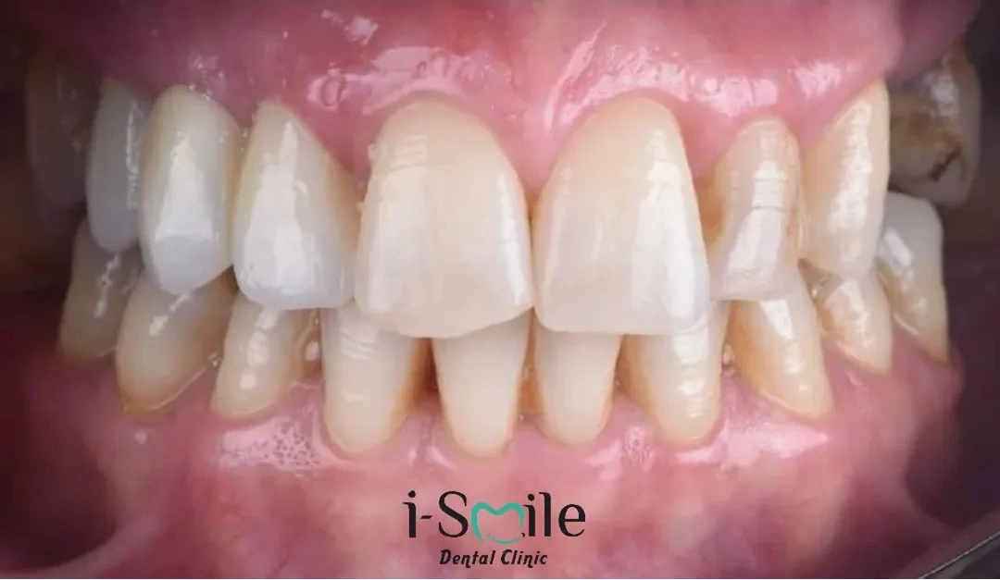
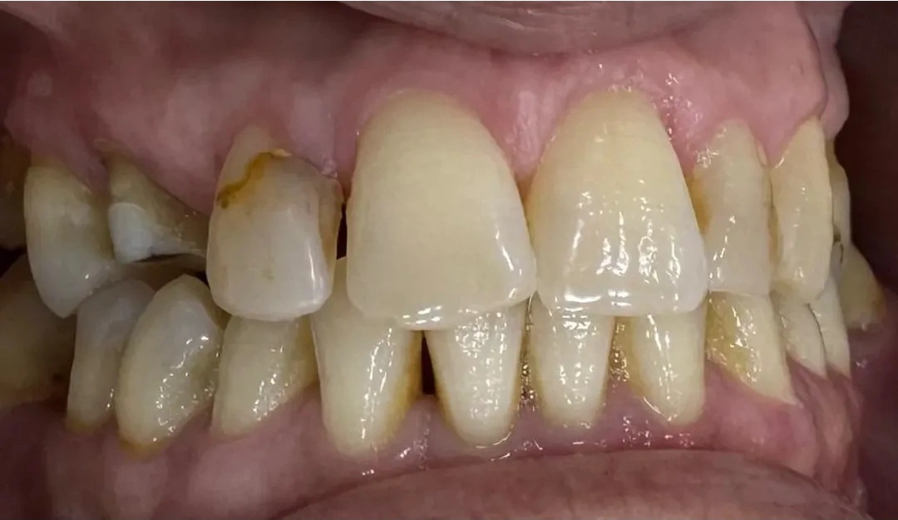
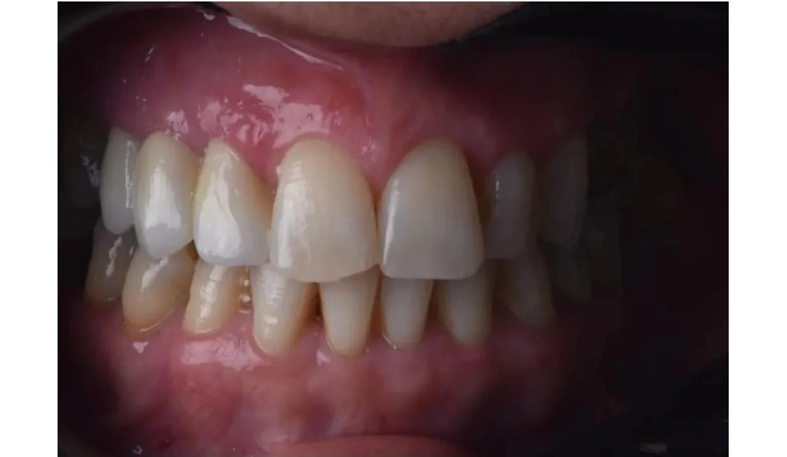
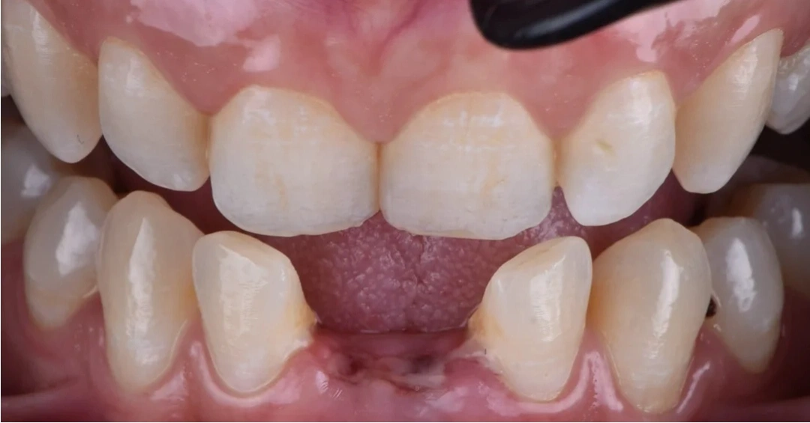
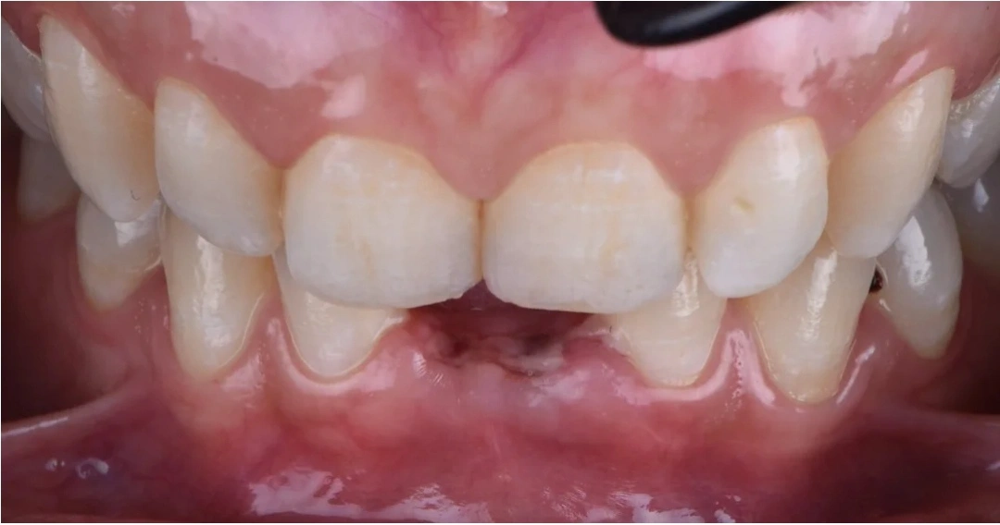
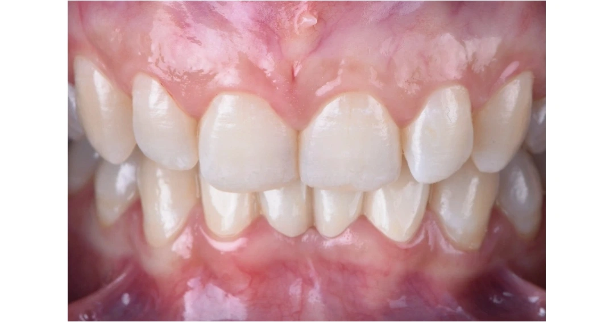
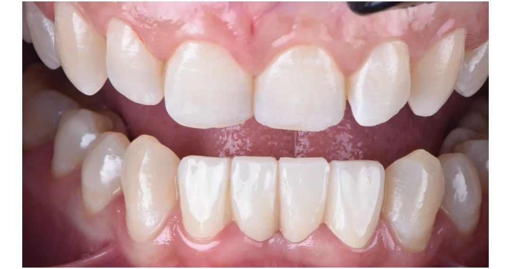
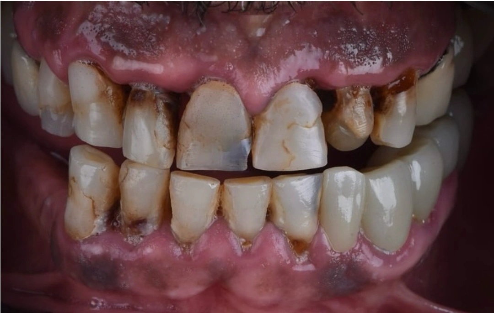
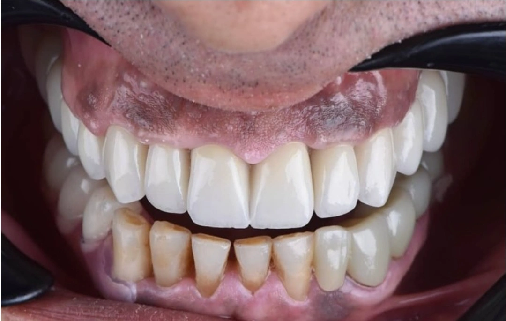
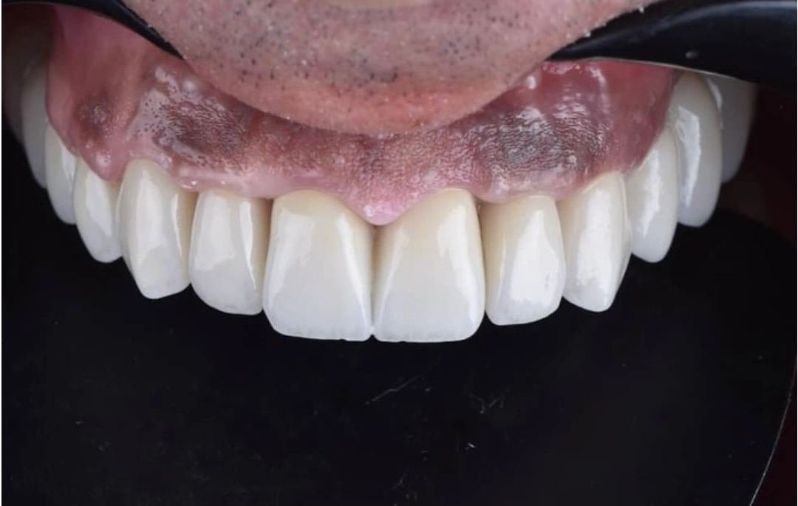

Prothèses
I Smile Dental Clinic
Des solutions prothétiques adaptées pour restaurer la fonction et l’harmonie de votre sourire.
Des solutions prothétiques adaptées pour restaurer la fonction et l’harmonie de votre sourire.

Les prothèses dentaires permettent de restaurer l’apparence et la fonction des dents selon les besoins de chaque patient.
À I Smile Dental Clinic, les solutions prothétiques sont envisagées dans le cadre d’une prise en charge personnalisée.
Selon la situation, différentes restaurations peuvent être proposées afin de répondre aux besoins fonctionnels et esthétiques du sourire.
Une consultation permet d’évaluer votre situation et d’échanger sur la solution la plus adaptée.

Des restaurations conçues pour répondre aux besoins esthétiques et fonctionnels du patient.
Une solution prothétique destinée à remplacer une ou plusieurs dents absentes et à restaurer l’harmonie du sourire.
Des restaurations fixes adaptées à la situation dentaire et aux objectifs de chaque patient.
Une attention portée à l’équilibre esthétique et à l’intégration naturelle de la restauration.
Découvrez les restaurations prothétiques présentes dans le dossier officiel du service.









Quelques vues du cabinet pour découvrir l’univers de la clinique.


Contactez-nous par téléphone ou WhatsApp pour obtenir des informations complémentaires.